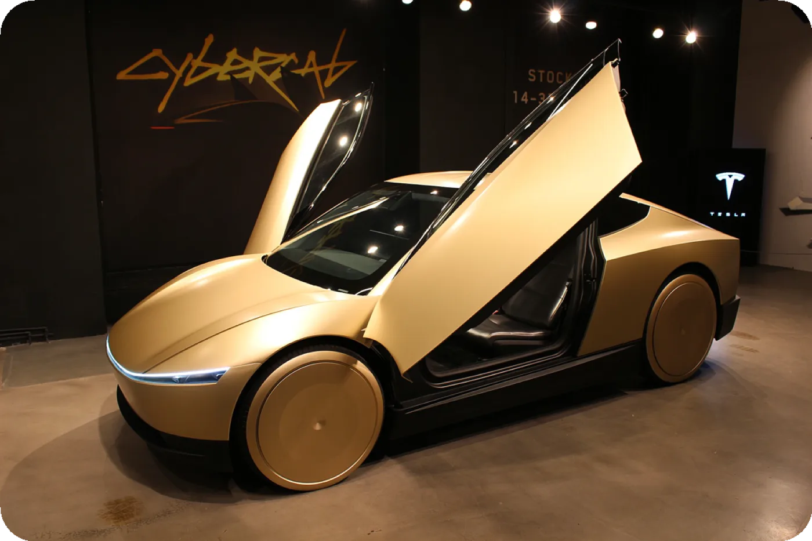
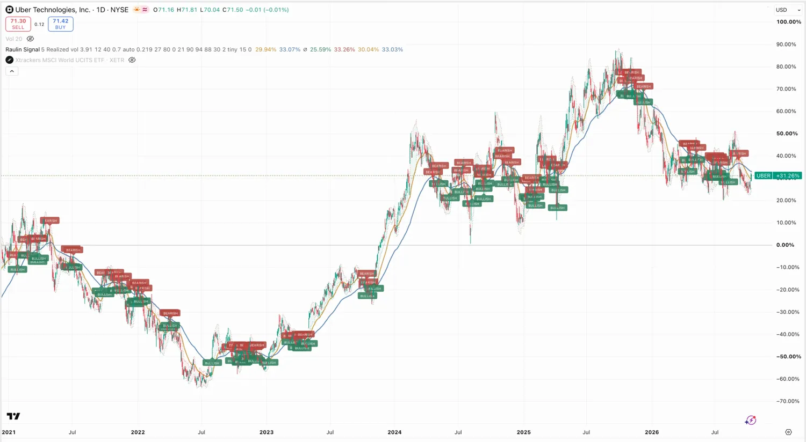

Autonomes Fahren
Was in Austin wirklich fährt, warum die Rechnung kippt, wer in der Kette wo verdient — und woran das Ganze noch hängt.
Das ist kein Test mehr

Alle vier Angaben sind Stand Oktober 2026. Das Cybercab hat kein Lenkrad, keine Pedale, keine Spiegel. Nicht als Studie — als Fahrzeug, das du in einer App buchst. Genau das ist der Unterschied zu allen Ankündigungen der letzten zehn Jahre.
Warum das die Rechnung dreht
Dein Auto steht rund 95 Prozent der Zeit herum. Du bezahlst Anschaffung, Versicherung, Steuer und Stellplatz dafür, dass es wartet. Ein Robotaxi wartet nicht.
Anteil der Zeit, in der das Fahrzeug fährt. Der Vergleichswert für Robotaxis ist eine Modellannahme von ARK Invest, Big Ideas 2026, kein gemessener Betriebswert. Eigene Darstellung.
Bei achtfacher Auslastung verteilen sich die Kosten des Fahrzeugs auf achtmal so viele Kilometer. Dazu fällt der größte Einzelposten weg: der Fahrer. Deshalb bricht der Preis pro Kilometer ein — und erst dann wird es für dich billiger, nicht zu besitzen, als zu besitzen.
ARK rechnet, dass rund 140.000 Robotaxis genügen würden, um das heutige gesamte Fahrdienst-Volumen in den USA abzudecken. Und dass etwa 24 Millionen — weniger als zehn Prozent des heutigen Fahrzeugbestands — den städtischen Verkehr übernehmen könnten.
Wer in dieser Kette wo verdient
Das ist der Teil, der über Geld entscheidet. Die Kette hat drei Glieder, und sie verdienen sehr unterschiedlich.
1. Die Technologie-Plattform — hier liegt das Geld
Wer die Software und die Daten hat, kassiert pro Fahrt, ohne Autos zu besitzen. Das ist das Geschäftsmodell mit den besten Margen und die Rolle, die Tesla und Waymo (also Alphabet) anstreben. ARK setzt den gesamten Unternehmenswert, der dabei 2030 entstehen könnte, mit 34 Billionen Dollar an — eine Modellzahl, aber sie zeigt, wo die Rechnung landet.
2. Der Autobauer — das schlechteste Los
Autos bauen ist kapitalintensiv und margenschwach. Wer nur die Hardware liefert, wird zum Zulieferer der Plattform. Genau deshalb will Tesla beides sein.
3. Die App, die den Kunden hat
Und hier kommt der Punkt, den ich spannend finde: Uber hat Partnerschaften mit praktisch jedem Entwickler außer Tesla, Lyft hat seit September Waymo in der App.
Fast alle halten Uber für den Verlierer, weil die Fahrer wegfallen. Ich sehe es andersherum: Die Fahrer waren Ubers teuerster Posten. Bleibt die App und fällt der Fahrer weg, wird aus dem Verlierer der Gewinner — vorausgesetzt, Uber behält den Kunden. Das ist die ganze Wette.
Die Gegenwette dazu: Wenn du das Robotaxi direkt bei Tesla buchst, brauchst du die App dazwischen nicht. Dass Waymo und Uber ihre Zusammenarbeit in Phoenix im Juli beendet haben, passt genau in dieses Bild.
Eigene Darstellung und eigene Einschätzung. Die Richtung — Plattformen vor Autobauern — entspricht der Einordnung von ARK Invest, Big Ideas 2026; die Höhen sind nicht gemessen, sondern illustrativ.
Gewinnt tendenziell
- Plattformen mit Software und Daten
- Apps, die den Kunden halten
- Autoverleiher, die Flotten betreuen
- Zulieferer für Sensorik und Rechenleistung
Verliert tendenziell
- Autobauer ohne eigene Software
- Kfz-Versicherer — weniger Unfälle heißt weniger Prämie
- Parkhausbetreiber
- alles, was am Privatauto hängt

Woran es noch hängt
Die Zulassung, nicht die Technik
Stand Oktober 2026 prüft die US-Verkehrsbehörde NHTSA, ob Tesla ein Fahrzeug ohne Lenkrad überhaupt selbst zertifizieren durfte. Fällt das anders aus, steht das Cybercab still — egal, wie gut es fährt.
Dazu: Jede Stadt entscheidet einzeln. Jeder Unfall mit einem fahrerlosen Auto verändert die Stimmung in allen anderen Städten mit. Diese Branche wächst nicht technisch, sie wächst genehmigungsweise — und das ist nicht planbar.
- 45 Fahrzeuge sind 45 Fahrzeuge. Von einer Flotte, die den Verkehr verändert, sind wir weit weg. Die Geschichte ist der Beweis, dass es geht — nicht der Beweis, dass es skaliert.
- Die 34 Billionen sind eine Modellrechnung und hängen daran, wie schnell andere Hersteller als Tesla aufbauen können. ARK nennt das selbst als Hauptrisiko ihrer Prognose.
- In Europa dauert es länger. Alles hier Genannte spielt in den USA. Wann du in Deutschland fahrerlos fahren kannst, weiß niemand.
Wie ich damit umgehe
Ich halte das Thema über die Plattformen, nicht über die Autobauer — und die großen Namen stecken in einem breiten Welt-ETF ohnehin schon. Eine zusätzliche Position braucht einen Grund, der über „die Geschichte ist spannend" hinausgeht.
Was ich beobachte, ist eine einzige Zahl: die Anzahl der Städte mit fahrerlosem Regelbetrieb. Nicht Ankündigungen, nicht Pilotprojekte — Städte, in denen man es buchen kann. Steigt die Zahl schnell, stimmt die These. Bleibt sie stehen, bleibt es eine Geschichte.